Questa vacanza aveva per me un significato speciale: tornare a vivere la montagna, questa volta con le mie ruote, ma con la stessa voglia di sempre di scoprire posti nuovi, godermi i panorami e condividere belle giornate insieme agli amici.
Eravamo in gruppo e abbiamo scelto una formula che ci è piaciuta moltissimo: alcune esperienze le abbiamo condivise tutti insieme, mentre per altre ognuno ha scelto il proprio percorso, in base alle proprie possibilità e ai propri interessi. Quando possibile, ci siamo ritrovati tutti direttamente a pranzo al rifugio.
Una soluzione perfetta: ognuno ha potuto vivere la montagna a modo suo, per poi ritrovarci tutti insieme a tavola.
Giorno 1 Domenica 30 agostoArrivo a Fiè
Partenza verso le 7.30, direzione Fiè allo Sciliar. Siamo arrivati per l’ora di pranzo e abbiamo fatto subito una prima tappa che avevo scelto con cura.
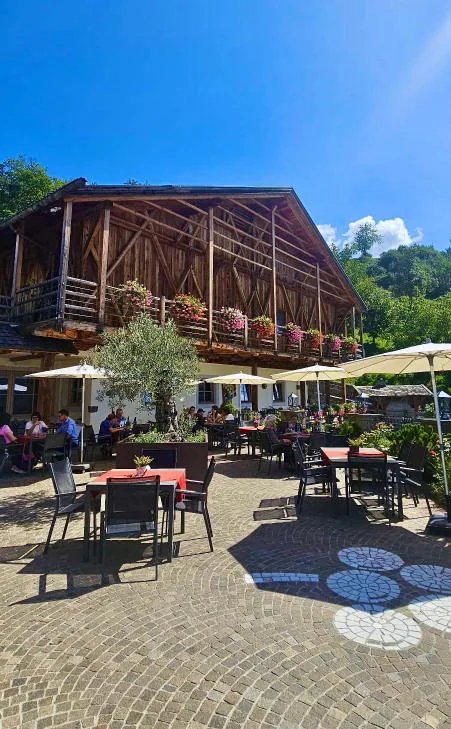
Pranzo al Pitschlmann
Il Pitschlmann è un maso che avevo individuato per la sua splendida terrazza panoramica, l’atmosfera tipica e le ottime recensioni. La cucina propone specialità della tradizione altoatesina e piatti stagionali, preparati con ingredienti regionali e prodotti del maso.
Accessibilità · Bagno
Accessibilità al Pitschlmann: il maso dispone anche di un bagno accessibile, un dettaglio importante per me.
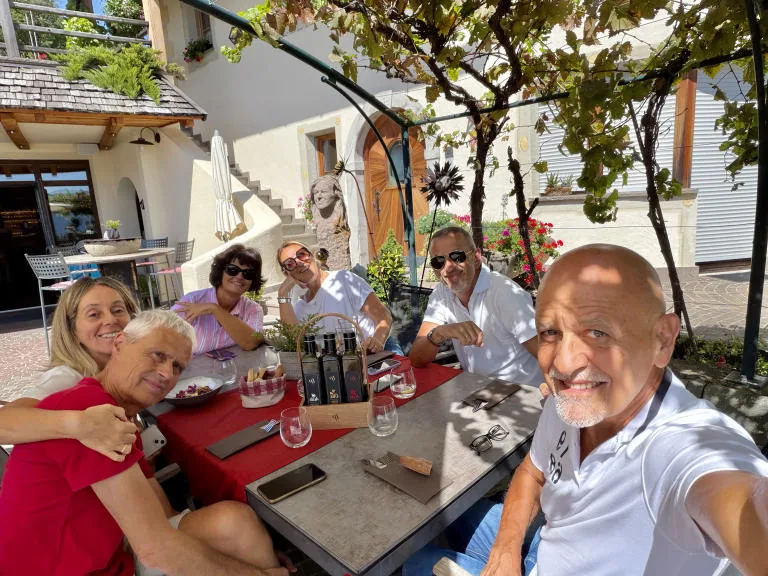
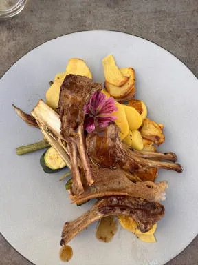
Il modo perfetto per iniziare la nostra vacanza: buon cibo, panorama e montagna.
Hotel Emmy
Dopo pranzo abbiamo raggiunto l’Hotel Emmy, dove dalle 15.00 è possibile lasciare i bagagli.
Accessibilità · Hotel
Accessibilità all’Hotel Emmy: ho scelto un hotel accessibile, con bagno attrezzato con WC adattato, maniglione e doccia a filo pavimento con sedia.
E poi c’è la posizione: semplicemente splendida, con vista sul paesino di Fiè e tramonti da urlo. Il tempo di sistemare i bagagli ed eravamo già pronti per la nostra prima passeggiata.
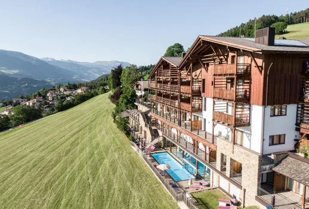
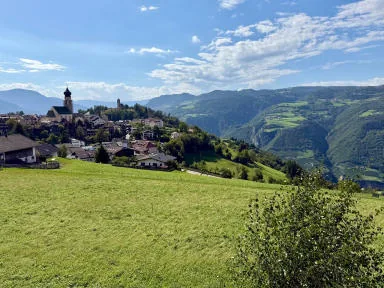
La prima passeggiata: Hotel Emmy – Sant’Antonio – Hotel Emmy
È una passeggiata consigliata proprio dall’hotel, con partenza e arrivo direttamente all’Hotel Emmy. Il percorso passa per Sant’Antonio, tra boschi, prati e splendide vedute sullo Sciliar.
Accessibilità · Percorso
Accessibilità della passeggiata: ho percorso questo itinerario con le mie ruote. Lungo il tragitto c’è una piccola salita in cui è richiesto l’aiuto di un accompagnatore.
Una prima passeggiata piacevole, perfetta per iniziare a scoprire il territorio e assaporare subito quella sensazione bellissima di essere tornata in montagna.
E per concludere la giornata…
Al rientro ci aspettava l’aperitivo di benvenuto sulla terrazza dell’Hotel Emmy, offerto dalla casa. Prima di cena ci ha raggiunti anche un’altra coppia di amici, partita più tardi: finalmente eravamo tutti insieme. Dopo il brindisi, ci siamo goduti l’ottima cena prevista dalla mezza pensione.
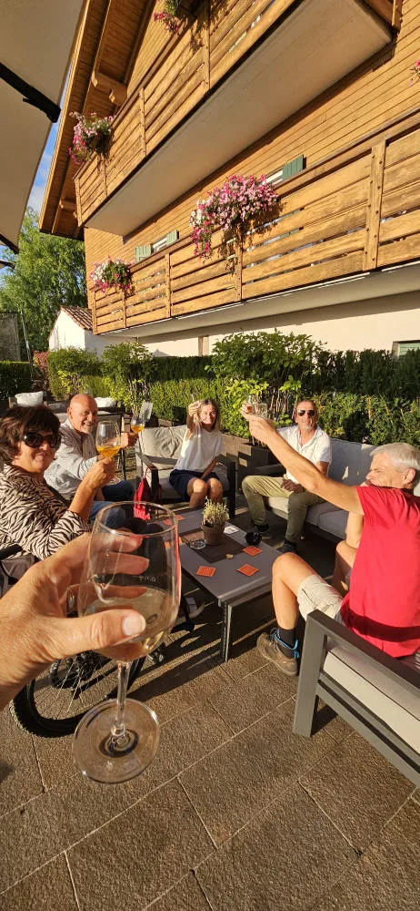
Una giornata iniziata presto, piena di belle emozioni, che si è conclusa nel modo migliore: a tavola, con il paesino di Fiè e le montagne davanti agli occhi, felici di essere finalmente tornati in montagna.
Giorno 2 Lunedì 31 agosto · Fiè allo SciliarDal Laghetto di Fiè a Malga Tuff
Per questa giornata siamo partiti tutti insieme, anche se per raggiungere il Laghetto di Fiè ci siamo organizzati in modo diverso: i nostri amici hanno fatto il percorso a piedi direttamente dall’hotel, mentre io ho raggiunto il lago in macchina.
Ci siamo ritrovati tutti al Laghetto di Fiè, pronti per iniziare la nostra giornata in montagna.
Arrivare al Laghetto di Fiè
Accessibilità · Parcheggio
Per arrivare in macchina ho raggiunto il parcheggio del Laghetto di Fiè. Una cosa importante da sapere: non è necessario entrare nel parcheggio a pagamento. All’esterno ci sono infatti posti riservati alle persone con disabilità, ben segnalati.
Una volta parcheggiata la macchina, con una breve passeggiata ho raggiunto il laghetto.
Accessibilità · Bagno
Al parcheggio è presente anche un bagno accessibile.
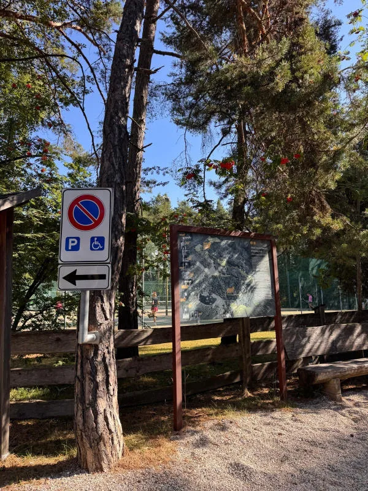
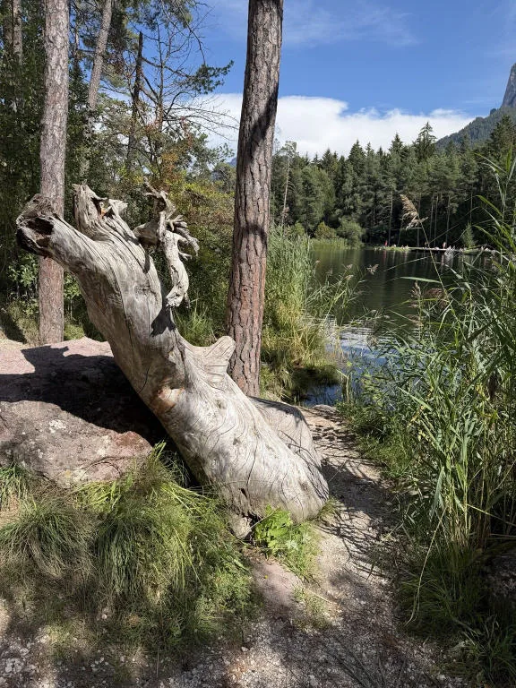
Il Laghetto di Fiè
Accessibilità · Lago
Il Laghetto di Fiè è uno dei laghi balneabili dell’Alto Adige e, cosa particolarmente importante per me, è accessibile anche alle persone con disabilità.
È disponibile una sedia apposita che permette di scendere direttamente in acqua.
Un’attenzione che rende questo splendido angolo di montagna ancora più inclusivo: non solo un luogo da ammirare, ma anche un lago che può essere vissuto e goduto.
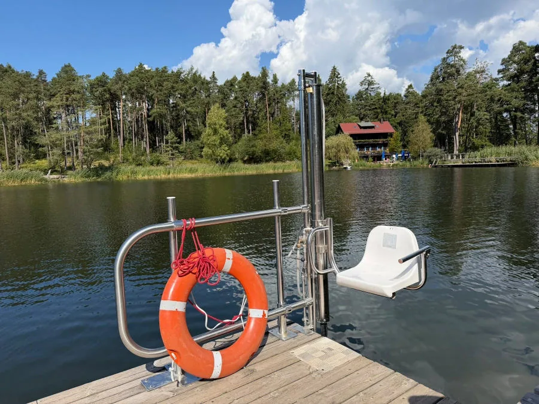
Dal Laghetto di Fiè a Malga Tuff
Una volta riuniti tutti, abbiamo iniziato con il giro del lago, poi abbiamo proseguito verso il laghetto superiore e quindi in direzione di Malga Tuff.
Accessibilità · Percorso
Per questo tratto abbiamo scelto il sentiero più largo, evitando la scorciatoia che attraversa il bosco.
Il percorso
Accessibile con le mie ruote, ma con qualche difficoltà in alcuni tratti.
Quando la pendenza aumentava, il fondo formato da piccoli sassolini faceva perdere aderenza alle ruote del Triride. In quei punti il motore non riusciva a mantenere una trazione sufficiente e ho avuto bisogno della spinta dell’accompagnatore.
Malga Tuff
Finalmente siamo arrivati a Malga Tuff, immersa nel verde e circondata dalle montagne.
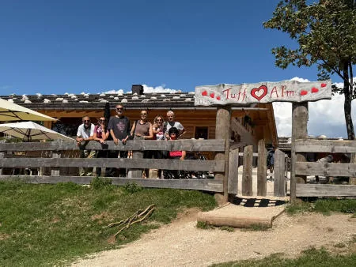
Qui abbiamo trovato una piccola area dedicata agli animali da accarezzare, con le simpatiche caprette, mentre nei prati intorno abbiamo incontrato alpaca, cavalli, asini e persino i cammelli.
Un ambiente davvero particolare, che ha reso la sosta ancora più piacevole. Dopo il percorso è arrivato il momento di fermarsi e godersi la malga, il panorama e tutta l’atmosfera di montagna.
Accessibilità · Bagno
Anche qui c’è un bagno accessibile.
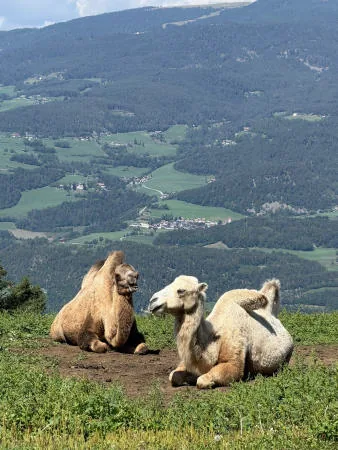
Accessibilità · Percorso
Il percorso · Il ritorno in discesa
La discesa da Malga Tuff, invece, non è stata un problema: impostando il Triride in modalità cruise control, le ruote hanno aderito bene al terreno e sono riuscita a percorrerla senza difficoltà.
Quindi, con qualcuno che possa aiutare nei tratti più impegnativi in salita, il percorso è fattibile; la discesa è risultata invece molto più semplice.
Il Laghetto superiore
Al rientro ci siamo soffermati ad ammirare ancora il Laghetto superiore, godendoci con calma questo angolo di natura prima di riprendere la macchina.
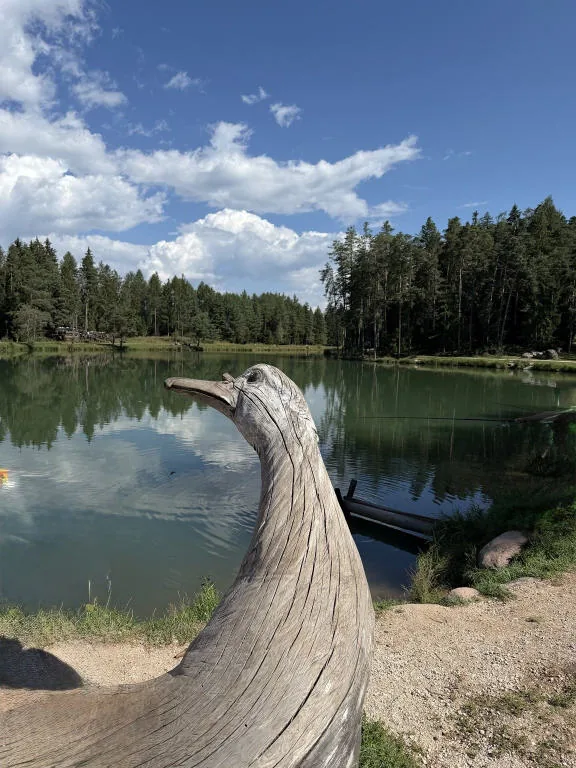
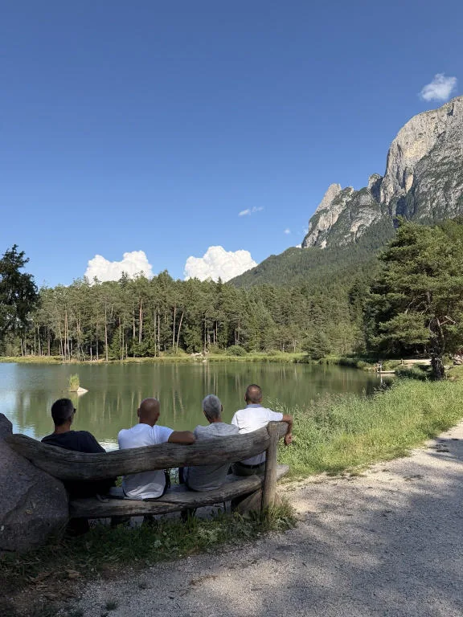
Castel Presule e aperitivo
Ma la giornata non era ancora finita!
Abbiamo deciso di allungarla con una tappa tutti insieme in macchina a Castel Presule (Schloss Prösels), il suggestivo castello che domina la frazione di Presule, nel comune di Fiè allo Sciliar.
Le sue origini risalgono al Medioevo e nel Cinquecento fu ampliato e trasformato in una elegante residenza fortificata. Oggi è uno dei luoghi simbolo del territorio e si inserisce magnificamente nel paesaggio altoatesino.
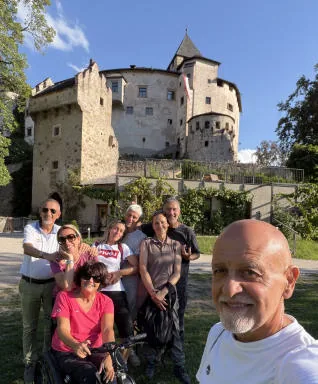
E naturalmente non poteva mancare una pausa godereccia!
Ci siamo fermati per un aperitivo allo Schlossbar Prösels, con una vista davvero speciale: il castello davanti a noi e le vigne tutt’intorno.
Un brindisi con un panorama bellissimo, perfetto per concludere una giornata piena di natura, montagne, animali, buon cibo e tante belle emozioni.
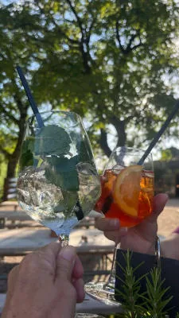
Giorno 3 Martedì 1 settembre · Alpe di SiusiLa Bullaccia e il Rifugio Arnika
Il terzo giorno, sull’Alpe di Siusi, avevamo in programma il giro della Bullaccia insieme ai nostri amici. L’anello completo, però, non è accessibile con la mia carrozzina: abbiamo quindi individuato un percorso alternativo per raggiungere comunque il Rifugio Arnika e ritrovarci tutti per il pranzo.
La salita a Compaccio
Siamo partiti tutti insieme in macchina da Siusi per raggiungere la stazione a valle della Cabinovia Alpe di Siusi.
Accessibilità · Cabinovia
La cabinovia è accessibile con la carrozzina: per me l’ingresso in cabina è stato semplice e agevole. Per le persone con disabilità la salita è gratuita, presentando il tesserino di invalidità.
È presente un bagno accessibile sia alla stazione a valle, a Siusi, sia alla stazione a monte, a Compaccio.
Sulla Bullaccia con il Telemix
Arrivati a Compaccio, i nostri amici hanno iniziato il loro percorso, mentre noi abbiamo raggiunto il Telemix Puflatsch, che permette di salire direttamente sulla Bullaccia.
Accessibilità · Telemix
Anche il Telemix è accessibile con la carrozzina. Per le persone in carrozzina l’utilizzo è gratuito, presentando la documentazione richiesta. Alla stazione a valle è inoltre presente un bagno accessibile.
Per raggiungere l’impianto si percorre un breve tratto sterrato, che con il mio Triride abbiamo affrontato senza difficoltà.
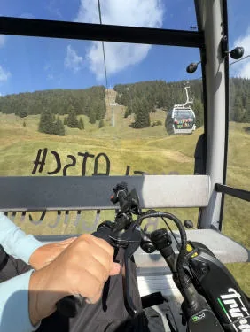
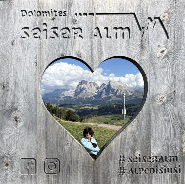
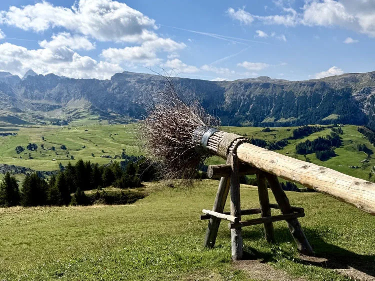
Verso il Rifugio Arnika
Una volta arrivati in quota, abbiamo imboccato il percorso verso il Rifugio Arnika, dove avevamo appuntamento con i nostri amici. Tra i prati dell’Alpe di Siusi e le Dolomiti intorno a noi, ci siamo goduti il paesaggio con tranquillità.
Tra i prati e le mucche al pascolo
Il percorso si è rivelato fattibile con il mio Triride e il fondo sterrato è stato, nel complesso, agevole. Proprio lungo la strada dalla Bullaccia al Rifugio Arnika abbiamo incontrato le mucche al pascolo, che ci hanno accompagnato per un tratto: un incontro che ha reso ancora più caratteristica la nostra passeggiata.
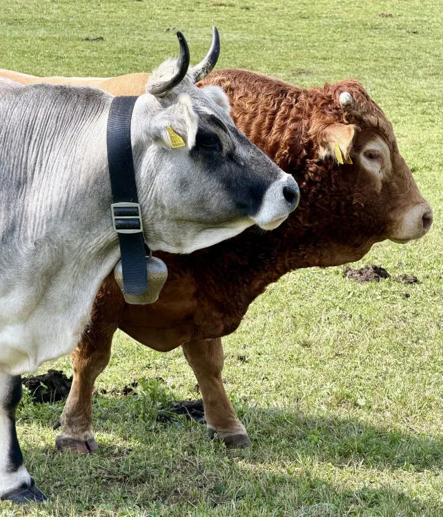
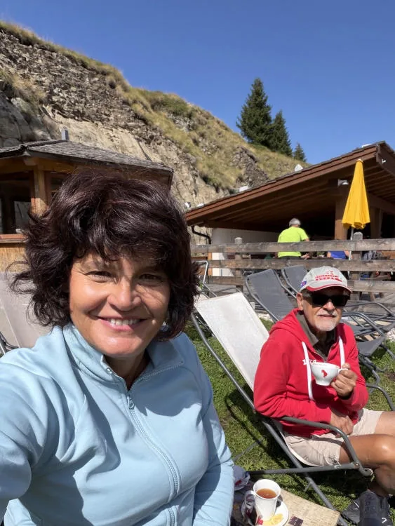
Accessibilità · Serve una spinta
Nei brevi tratti più ripidi in salita, la ruota del Triride tendeva a slittare. In quei punti è stata necessaria la spinta dell’accompagnatore per riuscire a superarli. Per il resto, il percorso è stato piacevole e ben affrontabile con il mio ausilio.
Siamo così arrivati al Rifugio Arnika, dove ci siamo ritrovati tutti per una meritata pausa pranzo. Dopo la salita, sederci insieme e condividere il racconto della mattinata è stato ancora più bello.
Il ritorno a Compaccio
Dopo pranzo, i nostri amici hanno proseguito completando l’anello della Bullaccia, mentre noi siamo tornati verso il Rifugio Bullaccia. Da lì abbiamo imboccato il percorso asfaltato che scende direttamente fino a Compaccio.
È stata una grande soddisfazione: siamo riusciti a fare tutta la discesa senza dover riprendere il Telemix!

Accessibilità · Discesa
Il percorso di discesa è asfaltato. Nonostante la pendenza, con il Cruise Control del mio Triride siamo riusciti a percorrerlo senza problemi, mantenendo una velocità costante. Questa è la nostra esperienza con il mio ausilio: la pendenza va valutata in base alla carrozzina utilizzata e alla capacità di controllare la discesa.
Arrivati a Compaccio, ci siamo ritrovati nuovamente con i nostri amici per riprendere insieme la cabinovia e rientrare a Siusi.
Relax in piscina e cena in terrazza
Una volta arrivati in albergo, dopo una giornata tra i panorami della Bullaccia, ci siamo concessi un po’ di meritato relax in piscina.
Accessibilità · Piscina dell’hotel
La piscina dell’Hotel Emmy non dispone di un sollevatore per entrare in acqua. La zona degli sdrai offre comunque un ambiente piacevole per rilassarsi a bordo piscina e godersi il panorama.
La nostra camera era sul lato piscina: dalla terrazza, attraverso un passaggio accessibile anche con la carrozzina, potevamo raggiungere direttamente la zona degli sdrai.
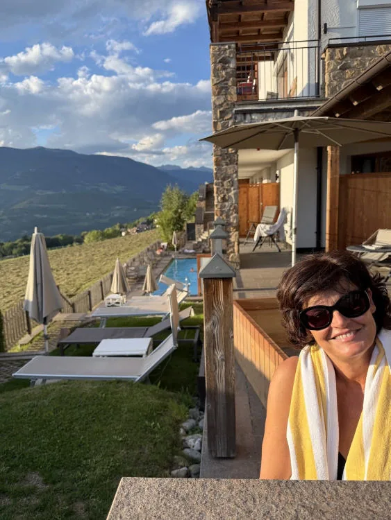
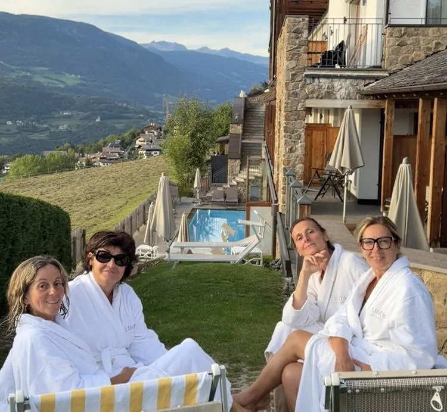
Cena in terrazza e tramonto su Fiè
E la giornata non era ancora finita! Avevamo prenotato un tavolo per la cena in terrazza. La temperatura era davvero piacevole e cenare all’aperto, ammirando il panorama, è stata una scelta azzeccata.
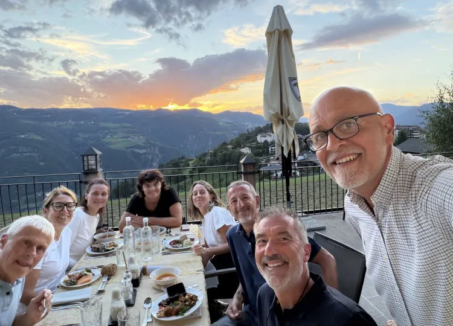
A rendere tutto ancora più bello è arrivato un bellissimo tramonto: la conclusione perfetta di una giornata tra natura, montagne e tanti piccoli momenti speciali.
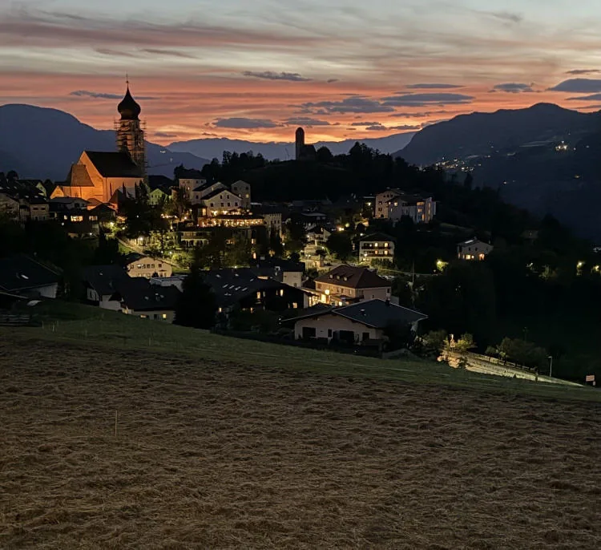
Giorno 4 Mercoledì 2 settembre · Alpe di Siusi e OrtiseiBaita Sanon e Ortisei di sera
Il nostro quarto giorno è iniziato con una nuova giornata alla scoperta dell’Alpe di Siusi: una passeggiata tra prati e baite, il pranzo con gli amici a Baita Sanon e, per concludere, una serata nella bella Ortisei.
Da Siusi ai prati dell’Alpe
Siamo arrivati a Siusi e da qui abbiamo preso la cabinovia fino a Compaccio (Compatsch), nel cuore dell’Alpe di Siusi. Una volta in quota, abbiamo iniziato il nostro percorso verso Baita Sanon insieme agli amici.
Il primo tratto è molto piacevole: una strada ampia, dal fondo regolare, attraversa i prati tra caratteristiche baite in legno e panorami dolomitici spettacolari. Camminare tutti insieme, con le montagne intorno, è stato un bellissimo inizio di giornata.
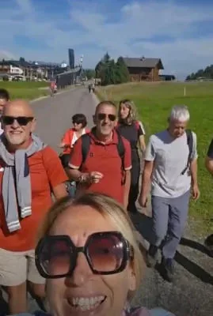
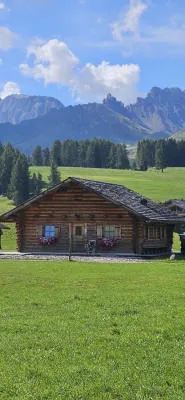
Verso Baita Sanon
Abbiamo proseguito insieme fino a un bivio, dove i nostri percorsi si sono divisi. Noi abbiamo continuato verso Baita Sanon; gli amici hanno scelto il giro verso Monte Piz e Adler Lodge Alpe, con l’appuntamento di ritrovarci tutti più tardi proprio alla baita.
Andando avanti, il paesaggio continua a regalare scorci bellissimi tra prati, alberi e cime dolomitiche. Il fondo, però, diventa più naturale e in alcuni punti sconnesso, con pendenze che richiedono maggiore attenzione.
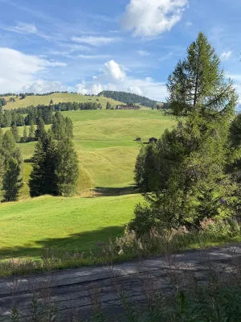
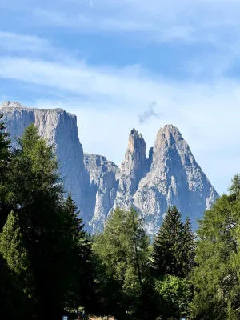
Accessibilità · Serve una spinta
Con il mio Triride All Road sono riuscita a percorrere il tragitto, ma nei punti più impegnativi ho avuto bisogno dell’aiuto dell’accompagnatore. Per la mia esperienza è fattibile con questo ausilio, da affrontare in compagnia: il fondo sconnesso e le pendenze richiedono attenzione e, in alcuni tratti, un aiuto concreto.
Arrivati a Baita Sanon, ci siamo fermati ad aspettare gli amici, godendoci il panorama e la tranquillità dell’Alpe.
Il pranzo a Baita Sanon
Quando ci siamo ritrovati tutti insieme, era finalmente arrivato il momento di sederci a tavola. Dopo i diversi percorsi della mattinata, condividere il pranzo e raccontarci la passeggiata è stato ancora più piacevole.
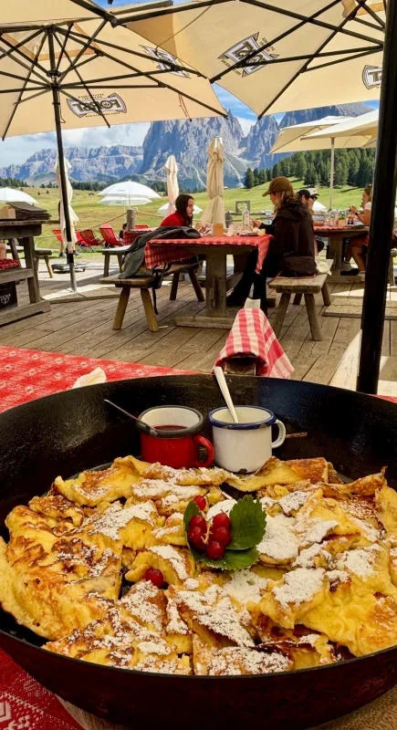
Accessibilità · Bagno
Baita Sanon dispone di un bagno indicato come accessibile alle persone in carrozzina.
Il rientro e un po’ di relax
Dopo pranzo ci siamo nuovamente divisi: noi siamo rientrati con calma verso Compaccio, ripercorrendo il tragitto dell’andata, mentre gli amici hanno proseguito verso Saltria.
Da Compaccio abbiamo ripreso la cabinovia per Siusi e siamo tornati in albergo. Prima di prepararci per la serata, ci siamo concessi un po’ di relax in piscina: una pausa piacevole dopo la giornata sull’Alpe.
Una chicca dopo cena: Ortisei
Dopo cena ci aspettava una passeggiata a Ortisei, per scoprire il paese nella sua veste serale. E devo dire che, con le luci accese, Ortisei è davvero una chicca!
Accessibilità · Parcheggio
Abbiamo trovato molto comodo il parcheggio della Conad, con diversi posti riservati alle persone con disabilità: da lì abbiamo raggiunto il centro con il mio Triride.
Le case tirolesi illuminate, i negozi e le vetrine creano un’atmosfera elegante e suggestiva. Con le montagne a fare da cornice, il paese di sera ha un fascino tutto suo.
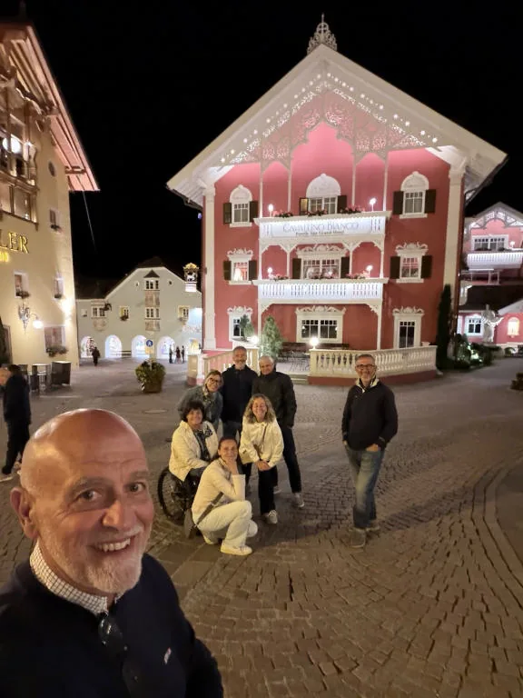
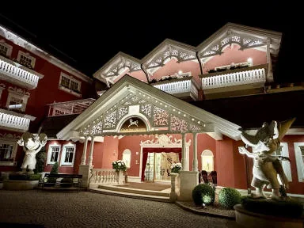
Accessibilità · Pendenze
Il centro è percorribile con il mio Triride, ma il paese è in pendenza: si alternano salite e discese, soprattutto nelle vie del centro storico. Mi sono mossa senza particolari problemi; nei tratti più ripidi può essere utile l’aiuto dell’accompagnatore. Le pendenze vanno valutate in base all’ausilio utilizzato.
Una passeggiata che ha chiuso nel modo migliore una giornata tra i panorami dell’Alpe di Siusi, Baita Sanon, buon cibo e un po’ di relax. Un altro bel ricordo da portare con noi, sulle mie ruote.
Giorno 5 Giovedì 3 settembre · Ortisei e Val d’AnnaLa Val d’Anna
Il quinto giorno abbiamo scelto due programmi diversi: i nostri amici avevano voglia di provare una passeggiata più impegnativa sull’Alpe di Siusi, partendo da Compatsch per raggiungere il Rifugio Bolzano, a 2.457 metri di quota, conosciuto anche come “il castello tra le nuvole” per la sua spettacolare posizione sullo Sciliar.
Noi, invece, ne abbiamo approfittato per tornare nella mia amata Val d’Anna, un angolo della Val Gardena a cui sono particolarmente affezionata.
Un angolo di verde alle porte di Ortisei
La Val d’Anna è una valle tranquilla e immersa nel verde, attraversata dal torrente e circondata dal bosco. È un luogo piacevole e rilassante, dove la natura è davvero protagonista.
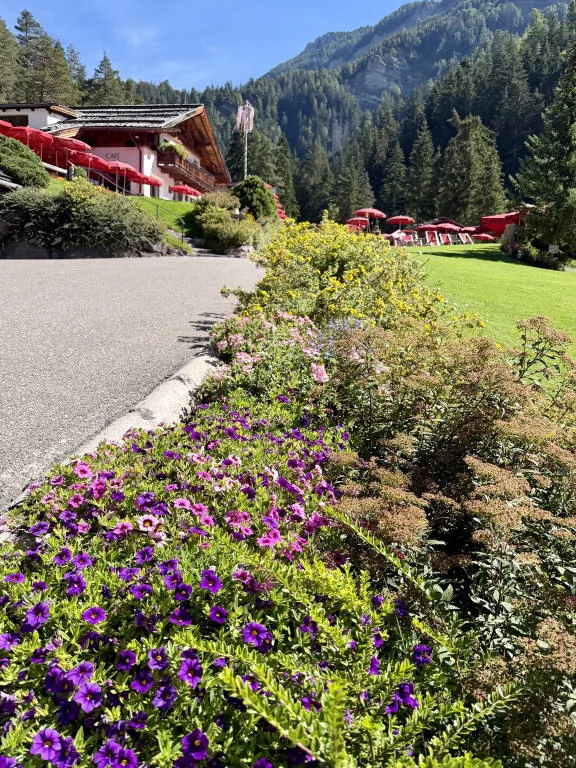
L’arrivo e il parcheggio
Siamo partiti alla volta di Ortisei. Arrivati in zona Seceda, abbiamo trovato il parcheggio già pieno. Abbiamo quindi proseguito verso la Val d’Anna e, raggiunta la strada asfaltata che conduce direttamente alla valle, abbiamo scoperto che l’accesso era soggetto a limitazioni.
Accessibilità · Parcheggio
Mostrando il contrassegno disabili, ci è stato consentito il passaggio: abbiamo così potuto raggiungere in auto il piccolo parcheggio della Val d’Anna, vicino al ristorante.
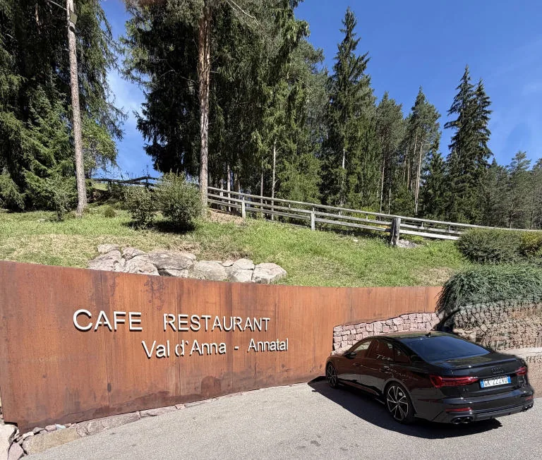
Arrivare in carrozzina dal Seceda
Accessibilità · Percorso
Per chi volesse partire dal parcheggio del Seceda, la strada asfaltata che conduce alla Val d’Anna è percorribile anche in carrozzina. Alcuni tratti in salita possono però risultare impegnativi con una carrozzina manuale, anche per l’accompagnatore che deve spingere. Con un ausilio elettrico come il Triride, il percorso è più facilmente affrontabile.
Pranzo e relax nel verde
E poi c’è un altro motivo per cui amo tanto la Val d’Anna: qui si mangia davvero da 10! Il Caffè Ristorante Val d’Anna è uno dei miei rifugi preferiti, dove gustare ottimi piatti della tradizione altoatesina in una bellissima posizione nel verde. Per me, una sosta qui è quasi d’obbligo!
Una volta arrivati, ci siamo sistemati su due lettini sotto un ombrellone, con un piccolo tavolino basso davanti a noi, perfetto per pranzare comodamente senza doverci spostare.
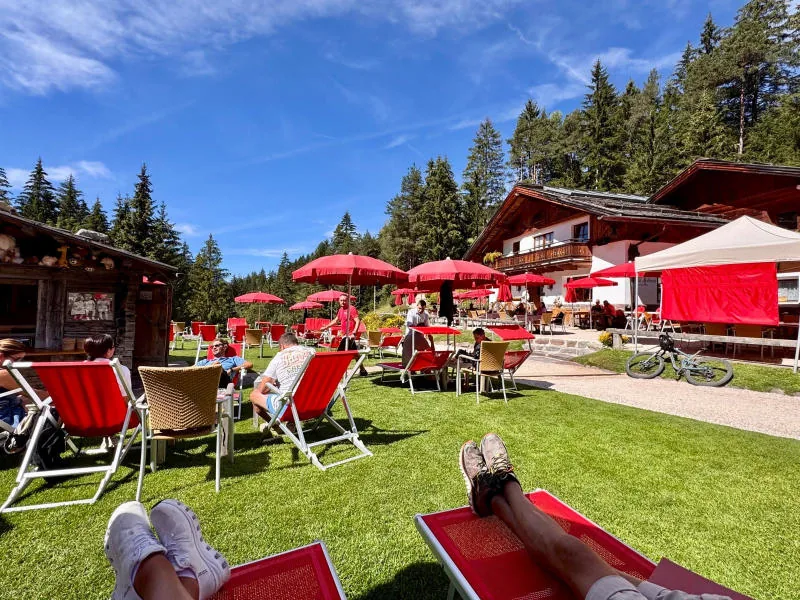
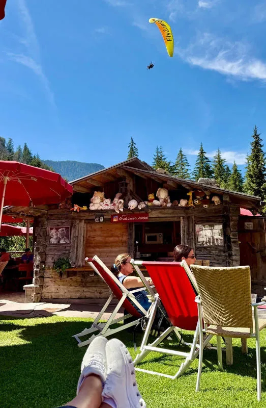
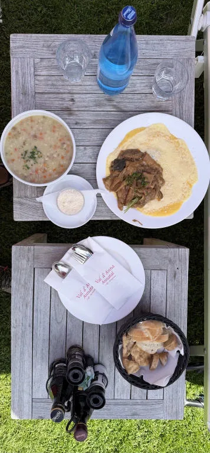
Ottimo pranzo e relax allo stato puro!
Un tramonto speciale all’Hotel Emmy
Dopo una giornata di buon cibo e relax nella mia amata Val d’Anna, siamo rientrati all’Hotel Emmy.
Abbiamo concluso la giornata cenando in albergo, accompagnati da un tramonto spettacolare che ha reso ancora più speciale la nostra serata.
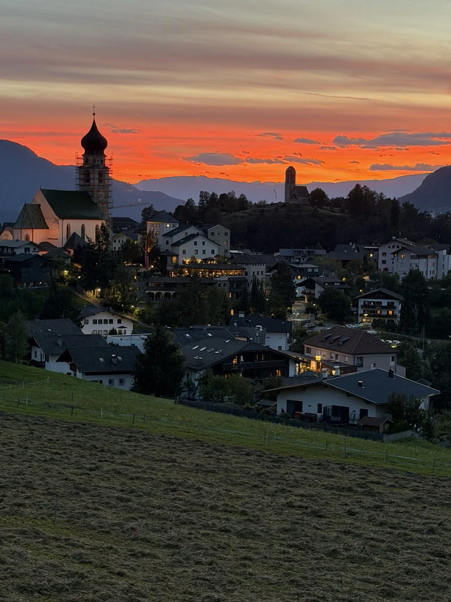
Giorno 6 Venerdì 4 settembre · Sesto e ultimo giornoMonte Pana
È arrivato, purtroppo, anche il sesto e ultimo giorno della nostra vacanza a Fiè allo Sciliar. Dopo colazione abbiamo caricato la macchina e siamo partiti tutti insieme verso il Monte Pana.
Dopo aver scoperto Fiè, l’Alpe di Siusi e Ortisei, ci sembrava un bel modo per salutare queste montagne. Il rientro a casa era previsto dopo pranzo: per l’ultima mattinata abbiamo quindi scelto una passeggiata facile e piacevole, senza fretta, per stare ancora un po’ tutti insieme.
Un’ultima mattina tra le Dolomiti
Il Monte Pana è un bellissimo altopiano immerso nel verde. Prati, boschi e panorami dolomitici fanno da cornice a una passeggiata che invita a rallentare e a godersi ogni momento.

L’arrivo al Monte Pana
Sul Monte Pana ci sono due parcheggi, P1 e P2, entrambi comodi per raggiungere la zona da cui partono i percorsi.
Da sapere prima di andare
Secondo le indicazioni riportate per la nostra visita, la sosta è a pagamento dal 1° dicembre al 31 marzo e dal 1° giugno al 15 ottobre, dalle 7:00 alle 14:00; dopo le 14:00 è gratuita.
Per il nostro ultimo giorno abbiamo scelto il Sentiero Avventura PanaRaida: un percorso tra prati e boschi ai piedi del Sassolungo, perfetto per trascorrere una mattinata tranquilla.
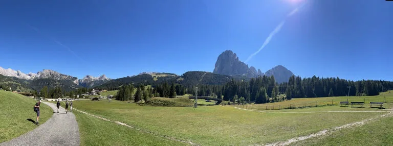
Il Sentiero Avventura PanaRaida
Il PanaRaida è un anello di circa 2,6 km, con un dislivello contenuto, intorno ai 50–60 metri. Lungo il percorso si incontrano stazioni in legno e installazioni interattive: case sugli alberi, giochi, labirinti e altalene rendono la passeggiata piacevole e particolare.
Accessibilità · Percorso
Accessibilità del percorso
Il fondo è largo e battuto. Con il mio Triride sono riuscita a percorrere l’anello, ma nei tratti in pendenza è stato utile l’aiuto di un accompagnatore. È un aspetto da tenere presente per chi desidera affrontare la passeggiata con le proprie ruote.
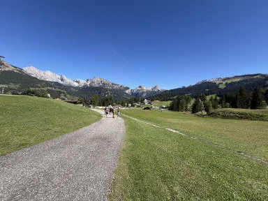
Il biotopo e una foto tutti insieme
Lungo l’anello c’è anche un biotopo con un percorso Kneipp, inserito nel bellissimo ambiente naturale del Monte Pana. L’acqua, il verde e le montagne sullo sfondo ci hanno regalato un altro angolo da ricordare.
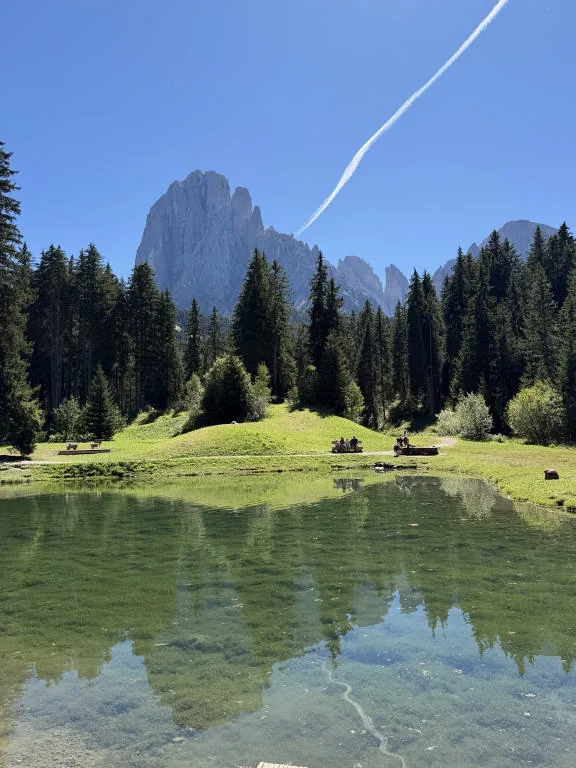
Ci siamo fermati anche per qualche foto di gruppo: un bel ricordo di quest’ultima passeggiata, vissuta insieme e senza fretta.
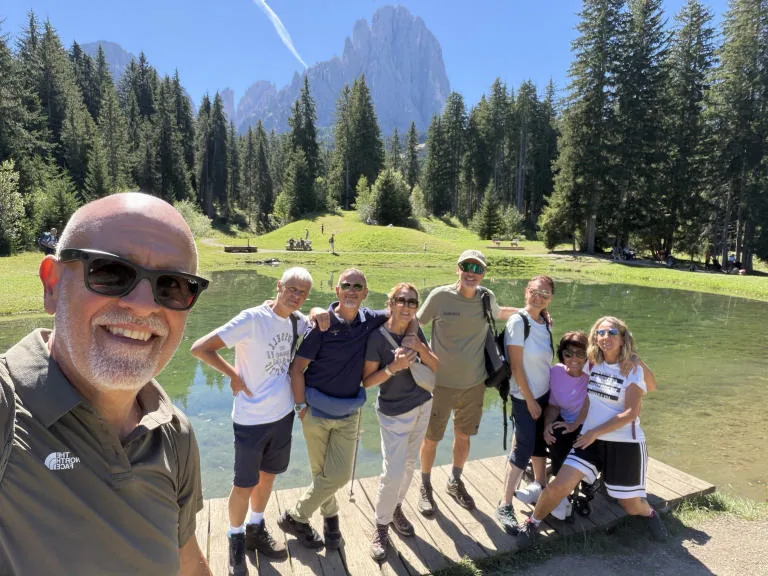
L’ultimo pranzo
Completato il percorso, siamo tornati verso la zona del Monte Pana per il nostro ultimo pranzo della vacanza. Abbiamo scelto il Ristorante Alpinum, all’interno dello storico Hotel Cendevaves.
Il pranzo ci ha lasciati soddisfatti e ci ha permesso di concludere con calma la nostra ultima giornata in montagna.
Accessibilità · Bagno
Accessibilità del ristorante
All’interno del ristorante è presente un bagno accessibile: un particolare per me sempre importante.
Sei giorni sulle mie ruote
Dopo pranzo è arrivato il momento di salutare queste montagne e di rimetterci in viaggio verso casa. Fiè allo Sciliar è stata una bellissima base per scoprire luoghi diversi: il paese e il suo laghetto, l’Alpe di Siusi, Ortisei, la Val d’Anna e infine il Monte Pana.
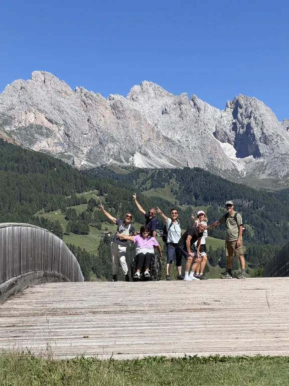
Sei giorni sono volati, lasciandoci tanti bei ricordi, paesaggi meravigliosi e nuove esperienze da raccontare. E soprattutto la soddisfazione di aver potuto vivere questi luoghi con le mie ruote, senza rinunciare alla voglia di scoprire e viaggiare.
Si conclude qui la nostra meravigliosa vacanza.
Il mio «senza sorprese»
Le passeggiate, con le mie ruote
Le cose che avrei voluto sapere prima di partire, raccolte qui per ritrovarle facilmente: fondo, pendenze e quei punti in cui una mano dell’accompagnatore fa la differenza.
Il voto riguarda la facilità del percorso con il mio Triride e l’aiuto descritto nel racconto. La scala va da 1 a 5: più stelle, maggiore agevolezza. Cinque stelle indicano un percorso descritto senza difficoltà; quattro un percorso generalmente agevole; tre tratti che richiedono aiuto; due difficoltà più marcate; una un percorso molto impegnativo. Non sono voti alla bellezza dei luoghi.
| Passeggiata | Voto | Da sapere prima |
|---|---|---|
| Hotel Emmy – Sant’Antonio – Hotel Emmy Giorno 1 | 4 su 5 | Passeggiata percorsa con le mie ruote, tra boschi, prati e vedute sullo Sciliar. Una prima uscita piacevole, con partenza e ritorno direttamente all’Hotel Emmy. Lungo il tragitto c’è una piccola salita in cui è richiesto l’aiuto di un accompagnatore. |
| Parcheggio e giro del Laghetto di Fiè Giorno 2 | 5 su 5 | Breve accesso dal parcheggio e giro del lago. Posti disabili all’esterno del parcheggio a pagamento. Al lago è descritta una sedia apposita per entrare in acqua. |
| Laghetto di Fiè – Laghetto superiore – Malga Tuff Giorno 2 | 3 su 5 | Scegliere il sentiero largo, evitando la scorciatoia nel bosco. In salita i sassolini fanno perdere aderenza al Triride: serve la spinta dell’accompagnatore. Il ritorno in discesa è stato più semplice. |
| Bullaccia – Rifugio Arnika e ritorno Giorno 3 | 3 su 5 | Accesso alla Bullaccia con il Telemix. Sterrato nel complesso agevole; nei brevi tratti ripidi la ruota slitta ed è stata necessaria una spinta. Il voto riguarda il percorso alternativo raccontato, non l’anello completo della Bullaccia. |
| Bullaccia – Compaccio: discesa asfaltata Giorno 3 | 4 su 5 | Affrontata senza problemi con il Cruise Control del mio Triride. La pendenza rimane un elemento importante: va valutata in base alla carrozzina utilizzata e alla capacità di controllare la discesa. |
| Compaccio – Baita Sanon e ritorno Giorno 4 | 3 su 5 | Primo tratto ampio e regolare; più avanti fondo naturale, sconnesso e pendenze. Con il Triride All Road il tragitto è stato fattibile, ma con aiuto concreto nei punti impegnativi. |
| Ortisei di sera Giorno 4 | 4 su 5 | Parcheggio Conad comodo, con posti disabili. Centro percorso con il Triride senza particolari problemi, ma con salite e discese: nei punti più ripidi può essere utile l’accompagnatore. |
| Accesso alla Val d’Anna dal Seceda Giorno 5 | 3 su 5 | Strada asfaltata con tratti in salita, più impegnativi con carrozzina manuale. Ho osservato questo accesso percorrendolo in macchina, senza provarlo con le mie ruote: è l’unico voto basato sull’osservazione. Mostrando il contrassegno disabili abbiamo raggiunto il parcheggio vicino al ristorante. |
| Monte Pana – anello PanaRaida Giorno 6 | 4 su 5 | Circa 2,6 km e 50-60 m di dislivello. Fondo largo e battuto; l’anello è stato percorso con il Triride, con aiuto utile nei tratti in pendenza. |
L’anello completo della Bullaccia non è risultato accessibile con la mia carrozzina. Il Rifugio Bolzano, il giro verso Monte Piz e Adler Lodge e il proseguimento verso Saltria sono itinerari scelti dagli amici: non assegno stelle perché non li ho percorsi con le mie ruote.
Le altre informazioni da ricordare
I bagni accessibili citati durante i sei giorni, raccolti in un unico promemoria.
- Pitschlmann Giorno 1 Il maso dispone di un bagno accessibile.
- Hotel Emmy Giorno 1 Bagno attrezzato con WC adattato, maniglione e doccia a filo pavimento con sedia.
- Parcheggio del Laghetto di Fiè Giorno 2 Bagno accessibile presente al parcheggio.
- Malga Tuff Giorno 2 Bagno accessibile presente alla malga.
- Cabinovia Alpe di Siusi · Siusi Giorno 3 Bagno accessibile alla stazione a valle.
- Cabinovia Alpe di Siusi · Compaccio Giorno 3 Bagno accessibile alla stazione a monte.
- Telemix Puflatsch Giorno 3 Bagno accessibile alla stazione a valle.
- Baita Sanon Giorno 4 Bagno indicato come accessibile alle persone in carrozzina.
- Ristorante Alpinum · Hotel Cendevaves Giorno 6 Bagno accessibile all’interno del ristorante.
Dalla terrazza della nostra camera un passaggio accessibile conduceva alla zona sdrai. La piscina non dispone di sollevatore. La cabinovia Siusi-Compaccio e il Telemix Puflatsch sono accessibili con la carrozzina.
Esperienza complessiva
5 cuori su 5Questo racconto descrive la nostra esperienza con carrozzina e Triride dal 30 agosto al 4 settembre 2026. Servizi, accessi e condizioni di sosta possono cambiare: per organizzare la visita controlla le informazioni aggiornate dei luoghi interessati.